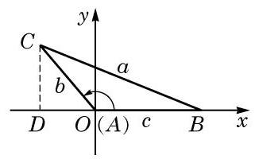
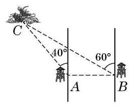
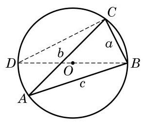
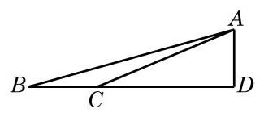
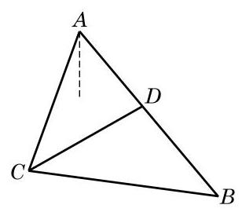
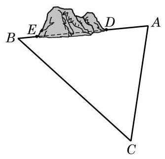
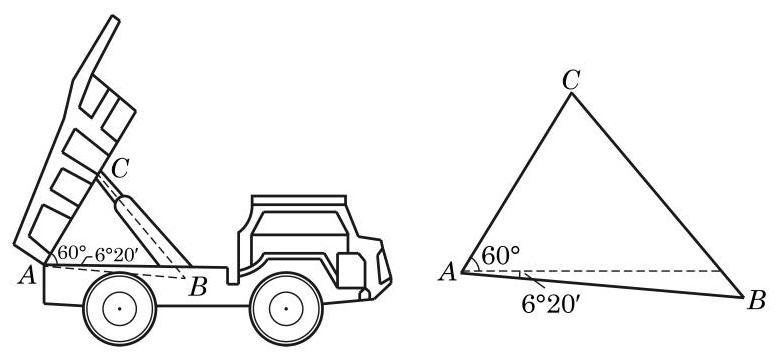
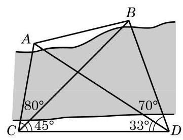

1 正弦定理
例如,某林场为了及时发现火情,设立了两个观测点 和 . 某日两个观测点的林场人员都观测到 处出现火情. 在 处观测到火情发生在北偏西 方向，而在 处观测到火情在北偏西 60° 方向. 已知 在 的正东方向 处 (图 6-3-1),要确定火场 分别距 及 多远. 将此问题转化为数学问题: 在 中,已知 . 求 与 的长.
为解答这个斜三角形问题, 就要研究斜三角形中边与角之间的关系.
在 中,无论 为锐角、直角还是钝角,对边 上的高 ,都有 ,其中 为边 的长. 为了避免分类讨论, 我们借助平面直角坐标系来统一处理.
如图 6-3-2,以 的顶点 为坐标原点,边 所在直线为 轴,建立平面直角坐标系. 将角 及 所对边的边长分别记作 及 ,则点 的坐标分别为 及 ,而 的面积 . 同理可得 .

图 6-3-2
本章以后若不特别说明,在 中角 所对边的边长都分别记作 、 .
将上式同时除以 ,就得到
即
这样,我们就得到了正弦定理: 在 中,若角 及 所对边的边长分别为 及 ,则有
正弦定理是“大角对大边”这一几何性质的定量刻画.
例题 1
例 1 如图 6-3-1,在 中,已知 , . 求 与 的长. (结果精确到 )

图 6-3-1
答案与解析收起 / 展开
解 在 中,由于 ,由正弦定理, 得
从而
所以， 长约为 ， 长约为 .
利用例 1 的结果, 在本节一开始所考虑的问题中, 就可以确定火场 的位置.
正弦定理表明三角形的各边和它所对角的正弦的比相等. 那么, 这个比的几何意义是什么呢?
例题 2
例 2 已知圆 是 的外接圆,其圆心为 ,直径为 . 试用 与角 及 的正弦来表示三角形三边的边长 及 .

图 6-3-3
答案与解析收起 / 展开
解 由于三角形内角和等于 ,因此角 及 中至少有两个角是锐角,不妨设 为锐角,如图 6-3-3 所示. 过 作直径 ,并连接 . 直径 所对的圆周角 , 弧 所对的圆周角 ,且 . 于是
即 .
这样, 由正弦定理就得到
能否用其他方法求解例 2 ?
换言之
例题 3
例 3 设 是 的外接圆的半径, 为 的面积. 求证:
(1) ；
(2) .
答案与解析收起 / 展开
证明 (1) .
(2) .
练习 6.3(1)
练习6.3(1) · 1
- 在 中,已知 . 求 . (结果精确到 0.01)
答案与解析收起 / 展开
练习6.3(1) · 2
- 在 中,已知 . 求 和面积 . (结果精确到 0.01)
答案与解析收起 / 展开
- (由于近似的方法不同,面积答案也可能为 16.59).
练习6.3(1) · 3
答案与解析收起 / 展开
2 余弦定理
正弦定理刻画了三角形中边与角的正弦之间的关系. 那么, 三角形中边与角的余弦之间存在什么关系呢?
在图 6-3-2 中, 由两点间的距离公式, 得
两边平方, 得
即
同理可得
这样,我们就得到了余弦定理: 在 中,设角 及 所对边的边长分别为 及 ,则有
余弦定理也可以表示成如下形式:
将余弦定理用于直角三角形, 立即可得勾股定理. 因此, 勾股定理可视为余弦定理的特例. 正弦定理和余弦定理都定量刻画了三角形的边角关系, 是求解三角形的基本工具. 我们已在上节例 1 中应用正弦定理处理了已知两角和一边求解三角形其他元素的问题,现在再来研究其他情况.
例题 4
答案与解析收起 / 展开
解 由余弦定理, 得
故 .
再由余弦定理,得
因为角 为三角形的内角,所以 .
由三角形内角和定理,最后可得 .
所以, .
例题 5
例 5 在 中,已知 . 求 及 .
例 4 中,如果用正弦定理求出 , 如何判断 ?
答案与解析收起 / 展开
解 方法一:由正弦定理，得
所以 ,从而 或 .
当 时, ,再由
得 ；
当 时, ,再由
得 .
所以, 或 .
方法二: 由余弦定理, 得
即 ,所以 或 .
当 时, ,所以 , 从而 ;
当 时, ,所以 , 从而 .
于是得到结论:
例题 6
例 6 在 中，已知 . 求角 的余弦值和 的面积 .
答案与解析收起 / 展开
解 由余弦定理，得
由此可得
从而
将例 5 中的数据 改为 ,该三角形只有一解. 对于已知三角形两边及其中一边所对角的三角形求解问题, 有兴趣的同学可以深入加以研究.
如例 5 所示, 已知三角形两边和其中一边所对的角, 解出来的三角形可能不唯一确定. 而对其他的情形，如本节例 4 、 例 6 和上节中的例 1 , 都有确定的解. 这与证明三角形全等的条件之间有联系吗?
练习 6.3(2)
练习6.3(2) · 1
答案与解析收起 / 展开
练习6.3(2) · 2
答案与解析收起 / 展开
练习6.3(2) · 3
- 在 中,已知三边之比为 . 求该三角形的最大角的余弦值.
答案与解析收起 / 展开
例题 7
例 7 在 中,已知 ,且 . 求证: 为等边三角形.
答案与解析收起 / 展开
证明 记 外接圆的半径为 ,由 ,得
又由 ,得 ,从而 . 再由 ,得 ,从而 .
所以， 为等边三角形.
例题 8
例 8 在 中，已知 ， ，且三角形面积 . 求 .
答案与解析收起 / 展开
解 由 ,得 ,所以
当 时,
而当 时,
所以, 或 .
为了表示例 8 中的角 ,我们引入如下记号.
一般地,我们用 表示满足 的角 ; 用 表示满足 的角 ; 用 表示满足 的角 . 这样,由 就得到 . 同理, 有 及 . 因此,当例 8 中的角 为锐角时,可以表示为 或 ; 而当角 为钝角时,可以表示为 或 .
符号 arcsin、arccos、 arc tan 在计算器上一般分别用 、 、 表示.
例题 9
例 9 根据下列条件,分别求角 :
(1)已知 ；
(2)已知 ；
(3)已知 .
答案与解析收起 / 展开
解(1)设锐角 满足 ，就有 . 这样， 原式等价于求解 ,从而有 . 于是,满足条件的角为 .
(2)设锐角 满足 ，就有 . 因为 ,所以原式等价于求解 ,从而有 .
又因为 ,所以 .
(3)设锐角 满足 ，就有 . 因为 ,所以原式等价于求解 ,从而有
又因为 ,所以 .
练习 6.3(3)
练习6.3(3) · 1
答案与解析收起 / 展开
练习6.3(3) · 2
- 证明: 平行四边形中, 四边平方和等于对角线平方和.
答案与解析收起 / 展开
练习6.3(3) · 3
答案与解析收起 / 展开
- 证明: (1) .
(2) . 将上述三式相加并整理,得 .
练习6.3(3) · 4
- 分别求满足下列条件的角.
(1) ; (2) ;
(3) ; (4) .
解三角形在实际生活中, 尤其是在测量方面, 有着广泛的应用. 下面通过一些实例来体会解三角形在测量上的应用.
答案与解析收起 / 展开
- (1) . (2) . (3) . (4) , .
例题 10
例 10 金茂大厦是改革开放以来上海出现的超高层标志性建筑. 有一位测量爱好者在与金茂大厦底部同一水平线上的 处测得金茂大厦顶部 的仰角为 ,再向金茂大厦前进 到达 处,测得金茂大厦顶部 的仰角为 . 请根据以上数据估算出金茂大厦的高度. (结果精确到 )

图 6-3-4
答案与解析收起 / 展开
解 根据题意, 作出如图 6-3-4 所示的示意图, 问题转化为求直角三角形 中边 的长.
在 中, .
由正弦定理,有 ,即
从而 .
所以，所估算的金茂大厦高度约为 .
例题 11
例 11 甲船在距离 港口 24 海里并在南偏西 方向的 处驻留等候进港，乙船在 港口南偏东 方向的 处沿直线行驶入港，甲、乙两船距离为 31 海里. 当乙船行驶 20 海里到达 处时,接到港口指令,前往救援忽然发生火灾的甲船. 求此时甲、乙两船之间的距离.

图 6-3-5
答案与解析收起 / 展开
解 根据题意, 作出如图 6-3-5 所示的示意图, 其中
在 中,由正弦定理,得 ,从而
由 ,知 为锐角,故
在 中,由余弦定理,有
所以, 此时甲、乙两船之间的距离为 21 海里.
练习 6.3(4)
练习6.3(4) · 1
- 某货轮在 处看灯塔 在北偏东 方向. 它以每小时 18 海里的速度向正北方向航行，经过 40 分钟航行到 处，看灯塔 在北偏东 方向. 求此时货轮到灯塔 的距离.
答案与解析收起 / 展开
- . 由 ,得 (海里). 所以,货轮到灯塔 的距离为 海里.
练习6.3(4) · 2
- 我缉私船发现位于正北方向的走私船以每小时 30 海里的速度向北偏东 方向的公海逃窜，已知缉私船的最大时速是 45 海里，为了及时截住走私船，缉私船应以什么方向追击走私船? (结果精确到 )
答案与解析收起 / 展开
- 设缉私船应以北偏东 方向,经过时间 追上走私船,则 ,从而 ,即 . 所以,缉私船应以北偏东 方向追击走私船.
练习6.3(4) · 3
- 修建铁路时要在一个山体上开挖一隧道, 需要测量隧道口 之间的距离. 测量人员在山的一侧选取点 ,因有障碍物, 无法直接测得 及 的距离. 现测得 ; 又测得 及 两点到隧道口的距离分别是 及 在同一直线上 . 求隧道 的长. (结果精确到 )

(第 3 题)
答案与解析收起 / 展开
- 在 中, ,由余弦定理 . ,得 (米), (米). 所以,隧道的长约为 421 米.
习题 6.3
A 组
习题6.3A · 1
答案与解析收起 / 展开
习题6.3A · 2
答案与解析收起 / 展开
习题6.3A · 3
答案与解析收起 / 展开
习题6.3A · 4
答案与解析收起 / 展开
习题6.3A · 5
答案与解析收起 / 展开
习题6.3A · 6
答案与解析收起 / 展开
习题6.3A · 7
答案与解析收起 / 展开
- 证明: 在 中,有 ,在 中,有 ,由 ,得 , ,从而有 .
习题6.3A · 8
答案与解析收起 / 展开
- 在 中,由余弦定理,得 . 在 中,由余弦定理,得 . 又由 ,得 ,将上述两式相加,即得 , 从而 .
习题6.3A · 9
- 根据下列条件,分别判断三角形 的形状:
(1) ；
(2) .
答案与解析收起 / 展开
- ( 1 )由 ,得 ,所以三角形 为等腰三角形.
(2) , 所以 ,从而有 ,即 0,故 ,三角形 为直角三角形.
习题6.3A · 10
- 如图,自动卸货汽车采用液压机构,设计时需要计算油泵顶杆 的长度. 已知车厢的最大仰角为 ,油泵顶点 与车厢支点 之间的距离为 与水平线之间的夹角为 的长为 . 计算 的长. (结果精确到 )

(第 10 题)
答案与解析收起 / 展开
B 组
习题6.3B · 1
答案与解析收起 / 展开
习题6.3B · 2
答案与解析收起 / 展开
习题6.3B · 3
- 在 中,已知 .
(1)求 ；
(2)求 的面积 .
答案与解析收起 / 展开
习题6.3B · 4
- 已知三角形两边之和为 8，其夹角为 . 分别求这个三角形周长的最小值和面积的最大值, 并指出面积最大时三角形的形状.
答案与解析收起 / 展开
- 周长最小值为 12; 当三角形为等边三角形时,面积取得最大值 .
习题6.3B · 5
- 求分别满足下列条件的角:
(1) ; (2) ；
(3) .
答案与解析收起 / 展开
习题6.3B · 6
答案与解析收起 / 展开
习题6.3B · 7
- 某船在海面 处测得灯塔 在北偏东 方向，与 相距 海里，且测得灯塔 在北偏西 方向,与 相距 海里. 船由 向正北方向航行到 处,测得灯塔 在南偏西 方向. 这时灯塔 与 相距多少海里? 在 的什么方向?
答案与解析收起 / 展开
- 在 中,由 ,得 . 在 中, ,从而得 . 所以灯塔 与 相距 海里, 在 的南偏东 方向.
习题6.3B · 8
- 如图,为了测定对岸 两点之间的距离,在河的一岸定一条基线 ,测得 . 求 间的距离. (结果精确到 )

(第 8 题)
答案与解析收起 / 展开
- 在 中,由 ,得 (米). 在 中,由 ,得 (米). 在 中, 64.81(米)
习题6.3B · 9
答案与解析收起 / 展开
探究与实践
探究与实践
海伦公式和”三斜求积”公式
我国南宋著名数学家秦九韶也独立发现了与海伦公式等价的公式, 但其证明已经失传. 他在著作《数书九章》卷五“田域类”里指出 “问有沙田一段，有三斜. 其小斜十三里, 中斜十四里，大斜十五里，里法三百步，其田几何”，给出的解法为 “以小斜幂并大斜幂减中斜幂，余半之自乘于上，以小斜幂乘大斜幂减上，余四约之，为实. 一为从隅，开平方得积”. 即是说,记三百步为一里,以里为单位, ,面积可由公式 得出,这就是著名的 “三斜求积” 公式. 秦九韶还对一次同余式组、高次方程的数值解法、线性方程组等都有深入研究, 因此美国科学史家萨顿 (G. Sarton)评价他为“他那个民族，那个时代，并且确实也是所有时代最伟大的数学家之一”.
利用三角形面积公式和余弦定理证明海伦公式和“三斜求积”公式虽有一定难度，但揭示海伦公式和“三斜求积”公式的等价性并不是太困难，希望同学们加以探究.